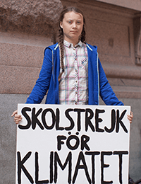

Regler ved livets harde skole
- Snakk alltid om livets harde skole.
- Forskning du ikke er enig i er fake news.
- Forskning du ikke forstår er fake news.
- Meningsmålinger der ditt syn vinner er ekte.
- Meningsmålinger der ditt syn ikke vinner er
bestillingsverk og fake news.
EXIT

Her kan du lære hvordan du skal oppføre deg i kommentarfeltet på facebook. Klikk på en av knappene for
å prøve!
- Klikk på dørmatta for å gå videre til neste kurs.
- Klikk på dørmatta for å gå videre til neste kurs.
f
Search..

NRK.no
Laila Syversen
Jeg sluttet personlig å kjøpe plastikkposer i matbutikken for flere år siden. Hva med at dere andre også bidrar til å forbedre klimaet?Like · Reply · 3h
Hugo Hansen
Norge er aldri verstingen!! Se på hvor mye alle andre land forurenser, så må vi få en del av skylden for at kloden vår forurenses? Patetisk!!Like · Reply · 48m
Kenneth Jørgensen
Har ikke noe annet å si enn at dette er det dummeste jeg noen gang har hørt. Det finnes ikke noe som heter klimakrisen.Like · Reply · 8h
Hugo Hansen
Stakkars hjernevaskede jentunge.Like · Reply · 10h
Sylvi Listhaug
Her må barnevernet steppe inn med en gang!Rune André Berg
Jeg er tidligere elev ved livets harde skole, og klimakrisen er bare tull. Disse politikerne prøver å distrahere oss fra å fokusere på de viktige problemene her i landet!Like · Reply · 2h
Ruth Narvestad
FNS klimapanels eneste hensikt er å få en politisk agenda til å se ut som forskning. Forskningen gir ikke mening, klimakrisen er fake news.Like · Reply · 27m